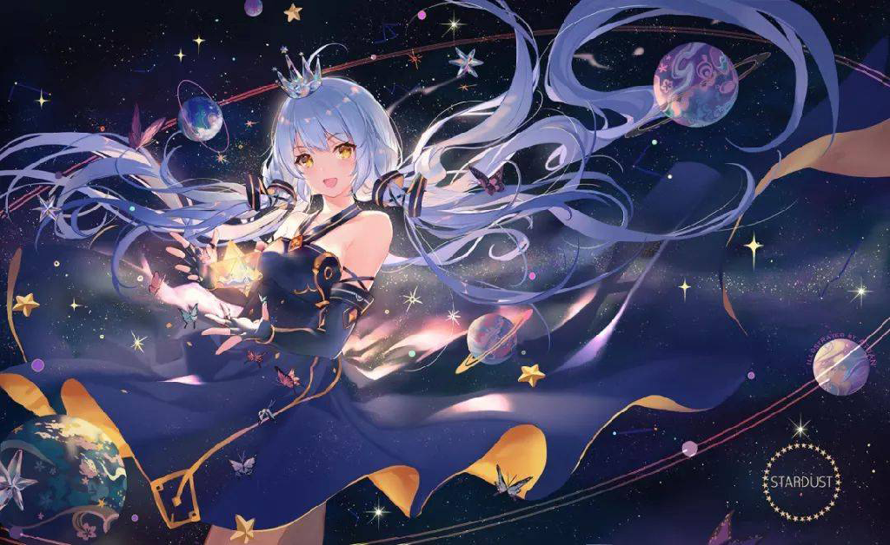
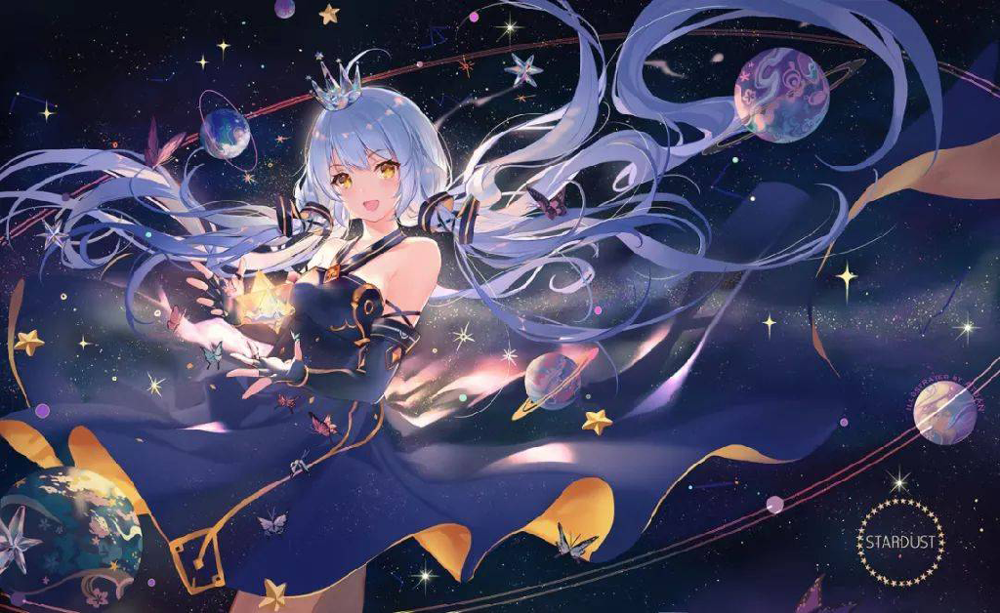

05 星尘
星尘是北京福托科技开发有限责任公司委托上海禾念信息科技有限公司，以Yamaha的VOCALOID 4语音合成引擎为基础开发贩售的虚拟女性歌手软件角色制品之一，软件演唱语言为中文，是首个VOCALOID 4中文声库。星尘V4声库于2016年2月20日正式发售。 星尘的音源是国内唱见茶理理，形象由“November”负责初稿设计，ideolo重绘作为公式人设图。

作品：《我多想说再见啊》
星尘是北京福托科技开发有限责任公司委托上海禾念信息科技有限公司，以Yamaha的VOCALOID 4语音合成引擎为基础开发贩售的虚拟女性歌手软件角色制品之一，软件演唱语言为中文，是首个VOCALOID 4中文声库。星尘V4声库于2016年2月20日正式发售。 星尘的音源是国内唱见茶理理，形象由“November”负责初稿设计，ideolo重绘作为公式人设图。
